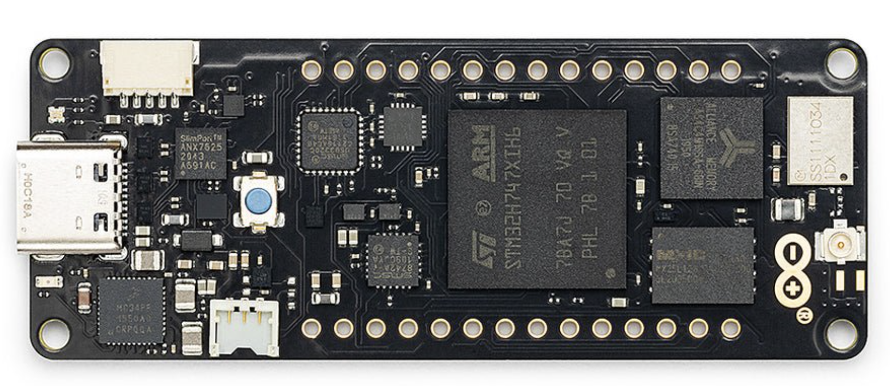

Arduino Portenta H7
The Arduino Portenta H7 is a dual-core STM32H747 board. Juno targets its Cortex-M7 core through Arduino's Mbed Portenta core; the Cortex-M4 is a separate core and is not a Juno target. The M7 runs at up to 480 MHz and has a double-precision floating-point unit, while the board provides 2 MB of internal flash, 1 MB of internal RAM, external flash and SDRAM, Wi-Fi, Bluetooth, Ethernet and a built-in RGB LED.

Core specification
| Characteristic | Portenta H7 |
|---|---|
| Main microcontroller | STMicroelectronics STM32H747XI |
| Juno target core | 32-bit Arm Cortex-M7 at 480 MHz |
| Companion core | Arm Cortex-M4 at 240 MHz (not a Juno target) |
| Program flash | 2 MB internal, plus 16 MB NOR flash |
| SRAM | 1 MB internal, plus 8 MB SDRAM |
| Logic and operating voltage | 3.3 V |
| USB connector | USB-C |
| Built-in RGB LED | Arduino pin 24 (LED_BUILTIN) |
| Wireless connectivity | 2.4 GHz Wi-Fi and Bluetooth Low Energy |
| Ethernet | 10/100 Mbps through the onboard Ethernet interface |
| Arduino CLI FQBN | arduino:mbed_portenta:envie_m7 |
| Juno board id | arduino-portenta-h7 |
What Juno supports
| Feature | Status | Notes | Example |
|---|---|---|---|
Gpio, DigitalOutput, analog input |
✓ | D0–D13 and A0–A5 use the Portenta M7 pin context; A0–A5 map to Arduino pins 15–20. |
Blink |
| Built-in RGB LED | ✓ | The Portenta variant exposes LED_BUILTIN as Arduino pin 24. |
Blink |
Delay, Clock, Serial |
✓ | Serial output uses the native USB connection. | |
BigInteger, BigDecimal, MathContext |
✓ | Runs in Juno's fixed arena. | SerialBigNumbers |
| Objects, arrays, inheritance, static and interface calls | ✓ | ||
| Wi-Fi, Bluetooth LE, Ethernet | — | The Portenta hardware provides these interfaces, but Juno does not expose them for this target yet. | |
Double-precision java.lang.Math |
— | The M7 has the hardware capability, but the Portenta board profile does not currently expose the Juno double-math runtime. | |
| Threads, locks and structured concurrency | — | Not exposed by the Portenta board profile yet. | |
| USB HID mouse, watchdog and LED matrix | — | Not exposed by the Portenta board profile. |
The Juno runtime emits a small C-linkage wrapper for the Mbed core's pinMode overload. This keeps generated
Thumb-2 assembly independent of C++ overload mangling while leaving the regular Arduino digitalWrite, analogRead
and delay calls on the core's native symbols.
Features
These examples need only a Portenta H7 and its USB-C cable.
Blink the built-in RGB LED
Blink uses MCU.getGpio().getBuiltinLed(), so the same Java program can run on the Portenta H7 and the other
supported Juno boards:
DigitalOutput led = DigitalOutput.of(MCU.getGpio().getBuiltinLed());
while (true) {
led.high();
Delay.millis(500);
led.low();
Delay.millis(500);
}
Build the generated sketch with the Portenta M7 target:
./mvnw -f juno-examples/pom.xml compile juno:verify \
-Djuno.main=io.github.jabrena.juno.api.hardware.gpio.Blink \
-Djuno.board=arduino-portenta-h7
Install the Mbed Portenta core once if needed:
arduino-cli core install arduino:mbed_portenta
Flash over USB serial by passing the Portenta's /dev/cu.* device to juno:upload:
./mvnw -f juno-examples/pom.xml compile juno:upload \
-Djuno.main=io.github.jabrena.juno.api.hardware.gpio.Blink \
-Djuno.board=arduino-portenta-h7 \
-Djuno.port=/dev/cu.usbmodem11201
The Portenta H7 Blink path has been uploaded successfully to the M7 core. Blink does not print serial output; use
juno:monitor after upload when testing an example that calls Serial.begin(...).